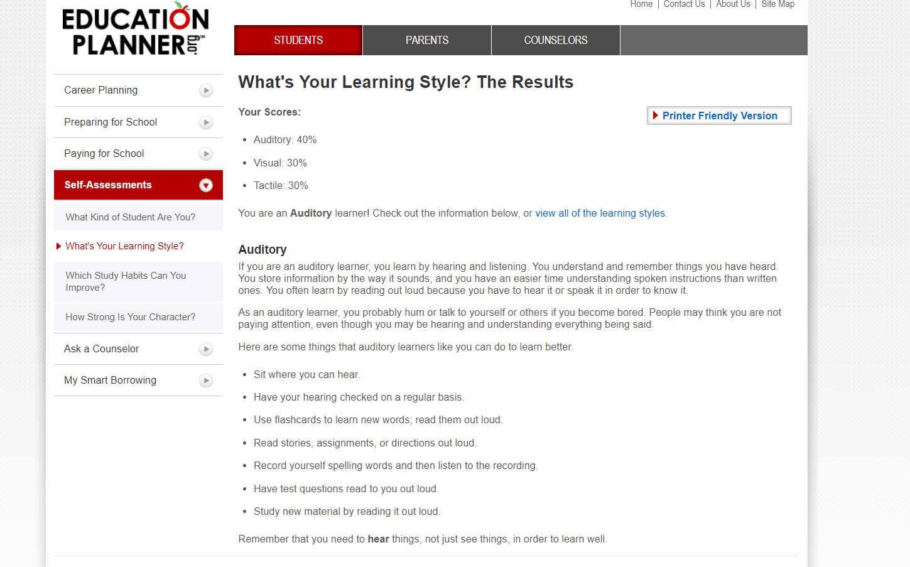

Personal Profile
An understanding of who I am


I have done a learning test, personality and a creativity test. I have learn that as a learner I am 40% auditory, 30% visual and 30% tactile therefore more of a auditory learner. My creativity score turned out to be a 52.65 a little on the lower side I must admit. My personality test produced a result of an Entertainer technically known as ESFP-A, with the qualities of being extroverted, observant, more of a prospector than a judger and assertive.
These learning tests gave me more insight to myself and how I should track where I am going, being an auditory learner, I feel that I am more of a learner through discussions, group environments, relaying ideas back and forth, my creativity test gave me an idea of where I really do lie and that is more towards the management area as there is less creativity but then again it is not all flops so I feel that I can give some necessary creative input. My personality test though really set in stone as to what sort of path I should try taking as it is outlined, in my eyes all the necessary attributes that are required of a project manager or a position of there or thereabouts.
